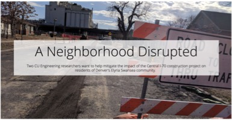
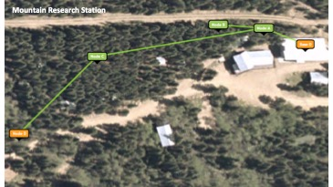
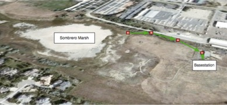
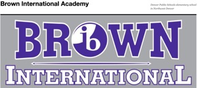
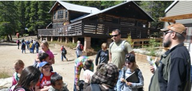

|
Home
Research
Teaching
Professional Activities
Community
Outreach
Students
Recent Publications
Press Coverage
Contact:
mishras at cs dot colorado dot
edu
+1 303-492-4686
Links
IUCRC: Pervasive Personalized Intelligence
The Colorado Research Center
for Democracy and Technology
The CU CyberSafety Research Center
Department of Computer Science
University of Colorado Boulder
|
|
The C70 Project
I have been working with three
environmental justice communities (Elyria-Swansea, Globeville and Cole) in
Denver that have been majorly impacted by The Central 70 construction
project. We are building a socio-technical system comprised of sensors,
smartphone apps and cloud servers to understand the impact of this construction
on their health & well-being and mitigate any negative impacts.

|
CU Mountain Research Station
I helped install and manage a wireless sensor
network at The CU Mountain Research Station that was used for studying
extreme environment. Real time sensor data collected from this networks was
used in lesson plans and hands-on activities that I helped developed for
4th and 5th grade curriculum in BVSD schools.

|
|
Sombrero Marsh
I helped install and manage a wireless sensor
network at The Sombrero Marsh Environmental Education Center that was used
for studying extreme environment. Real time sensor data collected from this
networks was used in lesson plans and hands-on activities that I helped
developed for 4th and 5th grade curriculum in BVSD schools.

|
Osher Lifelong Learning Institute
I volunteered to give guest lecture as part of the
Enrichment Lecture Series at the Osher Lifelong Learning Institute (OLLI),
Boulder. OLLI is a program designed for people age 50+ wishing to pursue
intellectual learning opportunities in a relaxed, stimulating, and socially
interactive atmosphere.
Title of the talk:
Strengthening Democracy Through Technology.
|
|
Cyberbullying Awareness
I held informational session and discussed
cyberbullying issues in the 5th grade classroom at the Brown International
Academy in Denver, CO to raise awareness and take action.

|
Field Trips (4th/5th
graders)
I have helped organize several overnight field
trips for 4th/5th grade students to CU Mountain Research Station and
day-trips to CU campus and Sombrero Marsh (more than ten BVSD schools).

|
|
CRA Congressional Fly-In
In an effort to serve the computing community and
ensure that US Congress understands the value of computing research going
on in their states and districts, I participated in the CRA Congressional
Fall Fly-In in 2016, where I interacted with lawmakers in Washington DC to
help make the case for federal support for computing research.
|
Other Outreach Activities
I have been involved lots of other community
outreach activities, including serving as science fair judge at Peak to
Peak middle and high schools and regional science fair competitions,
election judge to monitor the operation of electronic voting machines
during the 2008, 2012 and 2016 US presidential elections, and helping
develop computing projects for high school students as part of their
after-school activities at The St. Vrain Valley Schools Innovation Center.
|
|